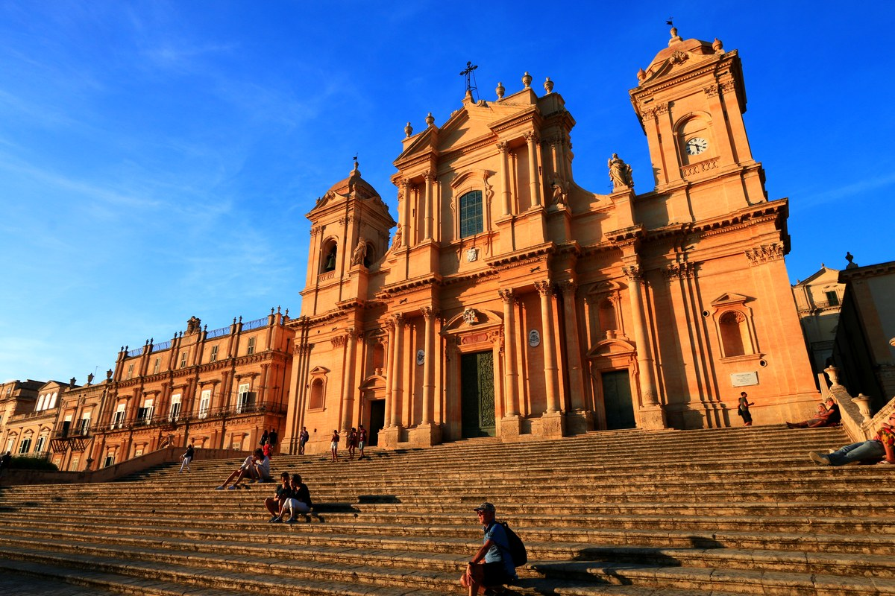
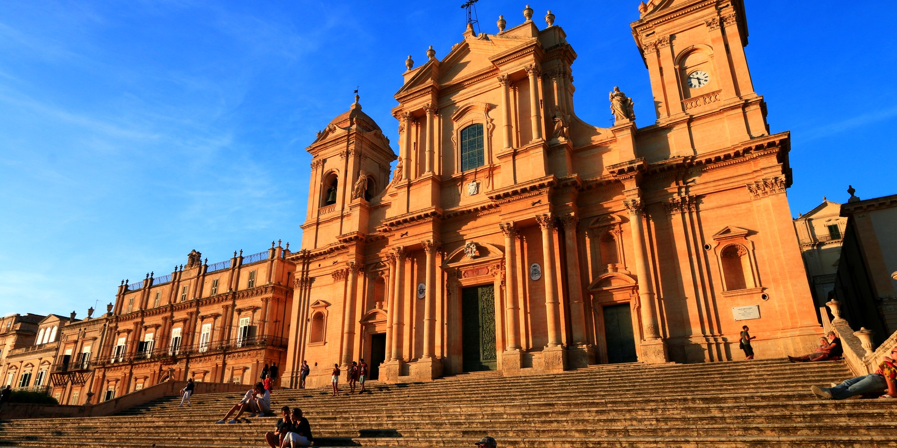
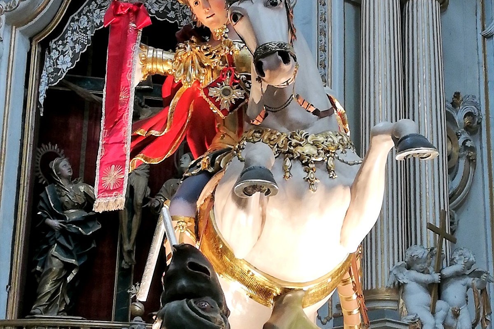
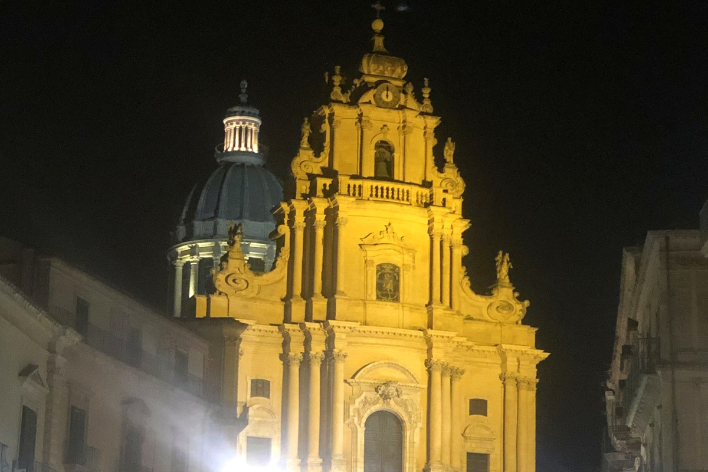
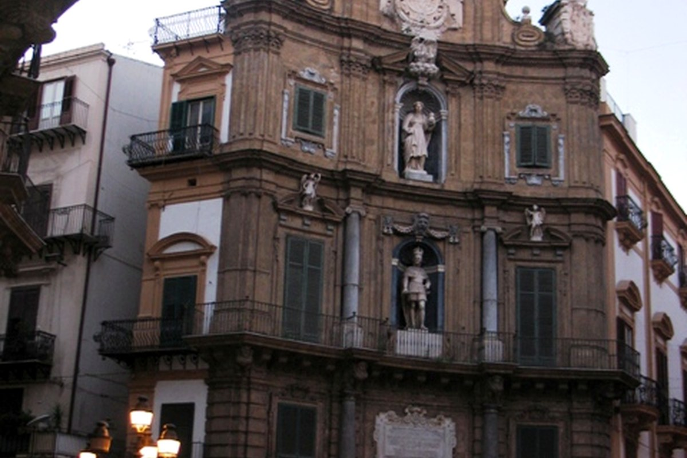

Piazza del Duomo
Il cuore della città, definito da cattedrale e palazzi: uno spazio progettato per una visione d’insieme.

Selezione di piazze e snodi urbani legati al Barocco siciliano. Apri una scheda per i dettagli.

Il cuore della città, definito da cattedrale e palazzi: uno spazio progettato per una visione d’insieme.

Topografia e architettura dialogano: la basilica emerge come punto di arrivo e di orientamento.

Uno slargo che organizza percorsi e prospettive: utile per leggere la struttura del quartiere storico.

Incrocio monumentale e simmetrico: un punto chiave per comprendere le principali direttrici del centro.